1

PREPARA IL RISO
Cuoci il riso con zafferano e sale, poi lascialo raffreddare fino alla consistenza ideale.

Sapori furoi dagli schemi
Ogni arancino nasce dall'incontro tra tradizione e nuove esigenze alimentari. Dalle verdure di stagione selezionate al classico ragù in versione senza glutine, ogni ricetta è pensata per offrire gusto autentico, qualità e inclusività senza rinunciare alla tradizione siciliana.
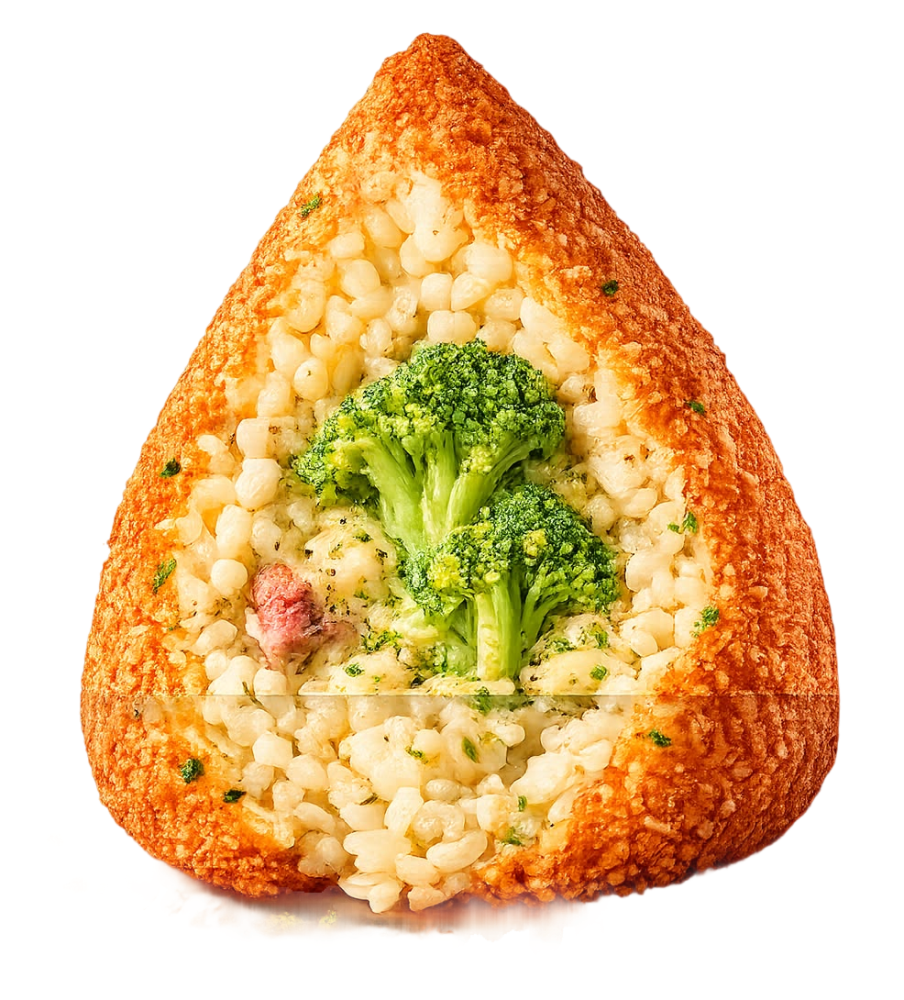
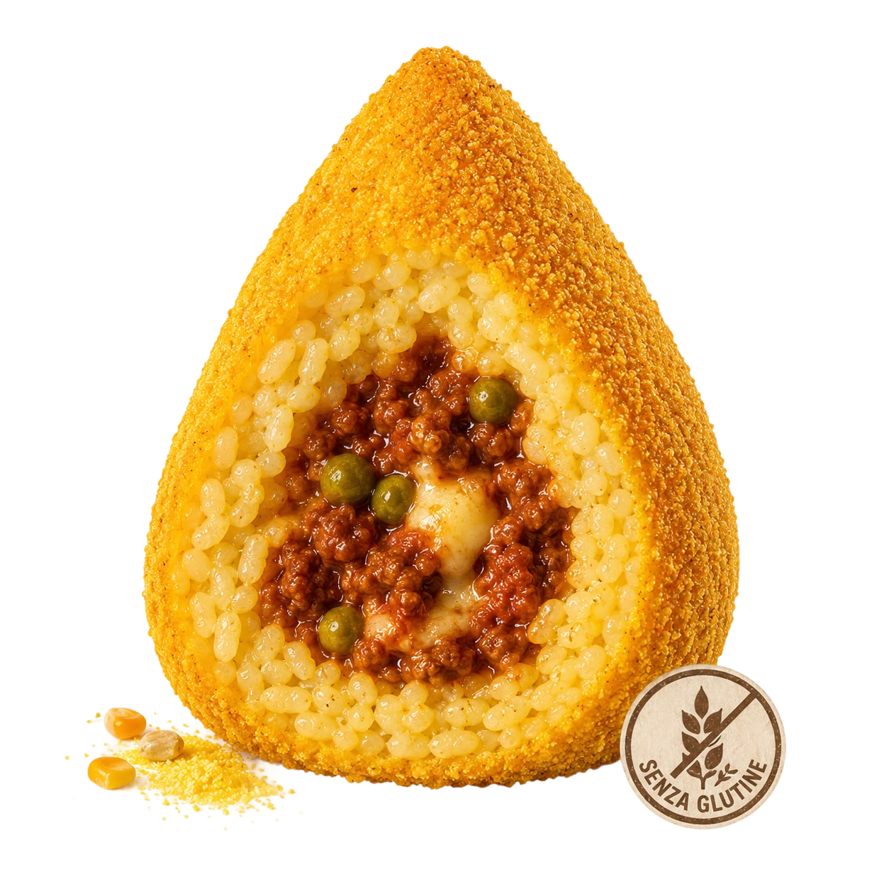
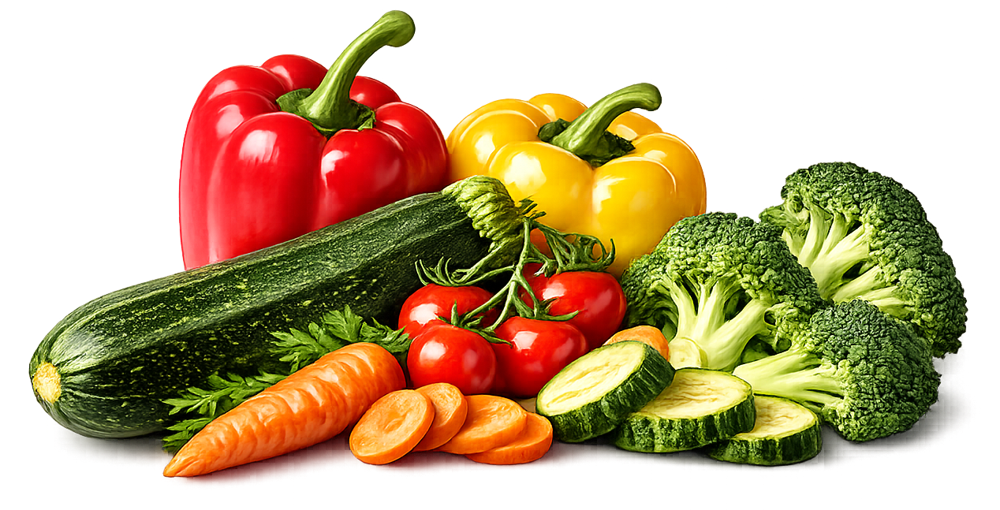
Due interpretazioni contemporanee dell'arancino siciliano. Da una parte la freschezza delle verdure di stagione in una proposta completamente vegetale, dall'altra il classico ragù siciliano in versione senza glutine con una fragrante panatura di mais.
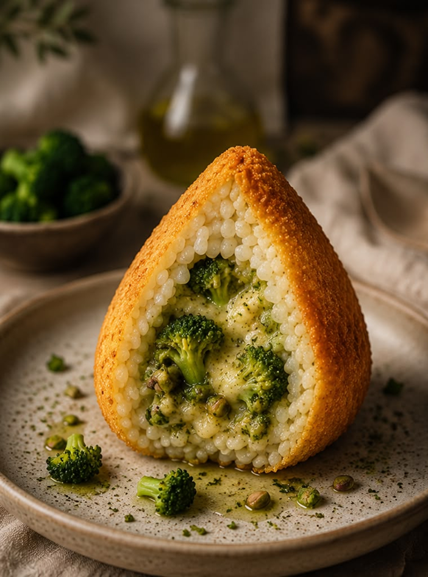
Un cuore ricco di verdure di stagione selezionate, avvolto da riso allo zafferano per un'esperienza genuina, colorata e sorprendentemente gustosa.
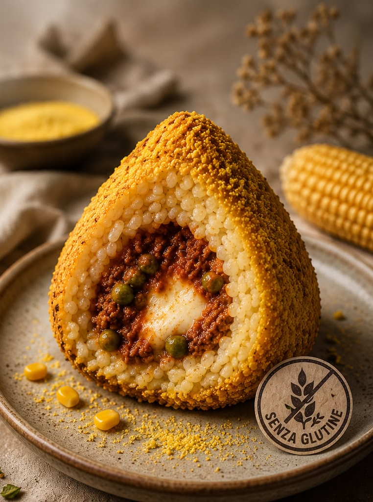
Tutto il sapore dell'arancino tradizionale al ragù, preparato con ingredienti senza glutine e una croccante panatura a base di mais dorato.
| Vegano | Senza glutine | |
|---|---|---|
| Intensità | ★★★☆☆ | ★★★☆☆ |
| Cremosità | ★★★★★ | ★★★★☆ |
| Piccantezza | ★★★☆☆ | ★★★☆☆ |
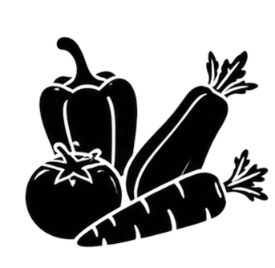
Un mix di verdure selezionate che cambia con la natura, regalando freschezza, colore e sapori sempre autentici.
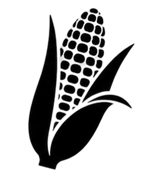
Morbidi e saporiti, i piselli arricchiscono il ripieno con il loro gusto autentico e intramontabile, anche in versione senza glutine.
VEGANO E SENZA GLUTINE
Due alternative leggere e inclusive, senza rinunciare al gusto della tradizione siciliana.
Cuoci il riso con zafferano e sale, poi lascialo raffreddare fino alla consistenza ideale.
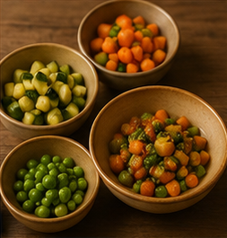
Salta broccoli, zucchine e verdure di stagione per creare un ripieno leggero e saporito.
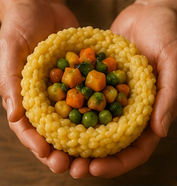
Unisci il ripieno al riso e forma un arancino ricco di gusto ma completamente vegetale.
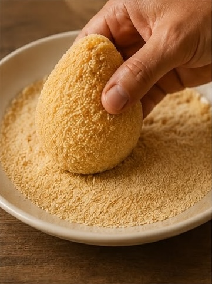
Prepara il riso e utilizza farina di mais per una panatura completamente gluten free.
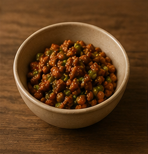
Cuoci una salsa di pomodoro con carne e piselli, proprio come la tradizione ma in versione gluten free.
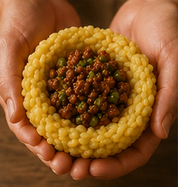
Inserisci il ripieno al ragù nel riso e modella con cura la forma classica.
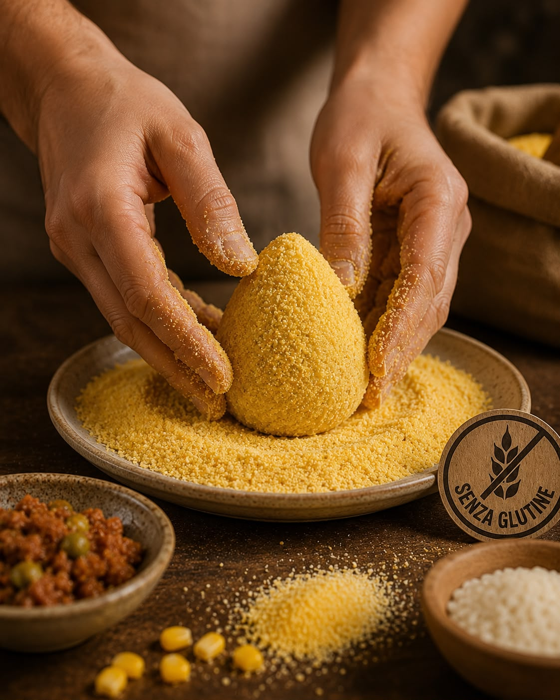
Passa l’arancino nella panatura di farina di mais per una croccantezza dorata e senza glutine.
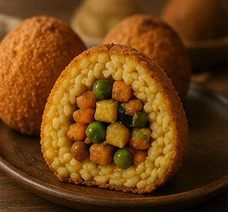
Friggi fino a doratura e servi caldo per un’esperienza inclusiva e ricca di sapore.